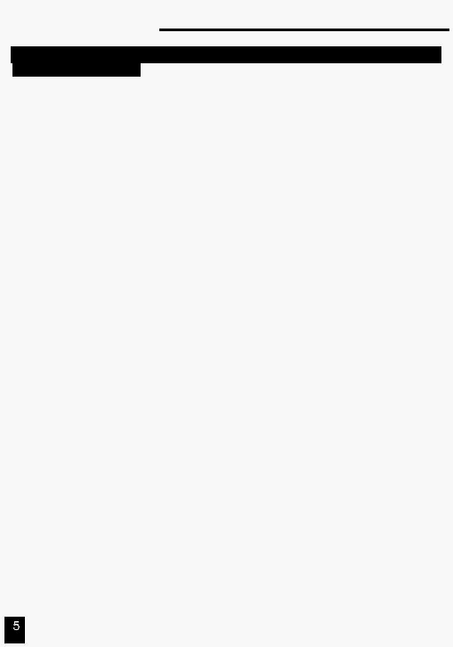

1. Короткий огляд
1.1 Передня панель
16.
Кнопка Edit/All Rev
Edit використовується, для запуску режиму Редагування.
All Rev – для зміни напрямку виконання всіх Програм.
17.
Кнопка
В режимі Add , додані сцени або кнопки Flash будуть запускатися одним натисканням.
Add or Kill/ Rec Exit У режимі Kill, натискання будь-якої кнопки Flash буде видаляти кілька Сцен або Програм.
Rec Exit використовується для виходу з режимів Програмування або Редагування.
18.
Кнопка Record/ Shift
Record використовується для запуску режиму Запис (Record) або програмування кроку.
Функції Зсуву (Shift) використаються тільки разом з іншими кнопками.
19.
Кнопка Master A
Установлює максимальне поточне значення для каналів 1-12.
20. Кнопка Park
Використовується для вибору Одиничної (Single)/ Складної (Mix) послідовності (Chase),
. установлює максимальне поточне значення для каналів 13-24, або на мить програмує.
. сцену на повзунка Master B, залежно від поточного режиму.
21. Кнопка Hold
Ця кнопка використовується, для продовження поточної сцени.
22
Кнопка Step
Ця кнопка використовується для переходу на наступний крок якщо повзунок (Speed ) у нижнім
положенні або в режимі Редагування.
23. Кнопка Audio
Запускає аудіо синхронізацію послідовності й інтенсивність звукових ефектів.
24. Повзунок Master A
Цей повзунок управляє всіма виходами всіх каналів.
25. Повзунок Master B
Цей повзунок управляє послідовностями всіх Програм.
26. Кнопка Blind
Ця функція забирає канал з послідовності Програми в режимі CHNS/SCENE.
27. Кнопка Home
Ця кнопка використовується для скасування Blind .
28. Кнопка Tap Sync
Повторне натискання цієї кнопки встановлює швидкість послідовності.
29. Кнопка Full On
Ця функція встановлює всі виходи в повну інтенсивність.
30. Кнопка Black Out
Ця кнопка використовується для гасіння всіх виходів крім Flash й Full On.
31. Повзунок Fade Time
Використовується для установки часу переходу (Fade Time).
32. Повзунок Speed
Використовується для регулювання швидкості виконання послідовності.
33. Повзунок Audio Level
Цей повзунок управляє чутливістю Аудіо входу (Audio input).
34. Кнопка Fog Machine Ця кнопка призначена для запуску дим – машини